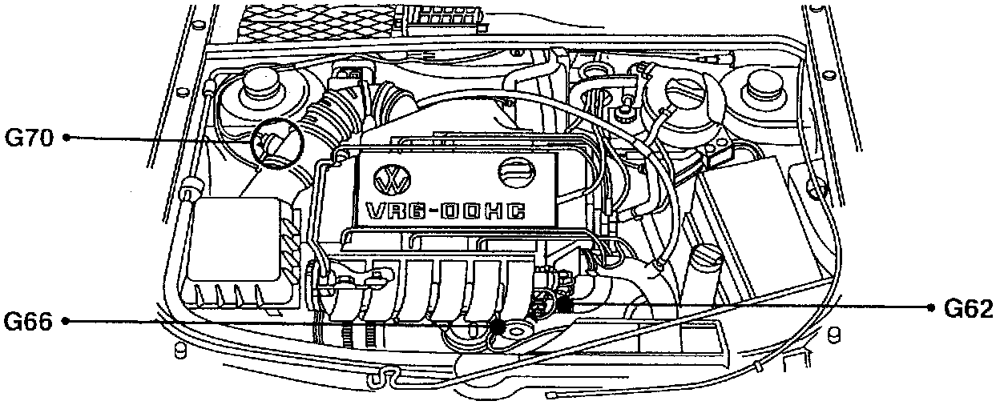
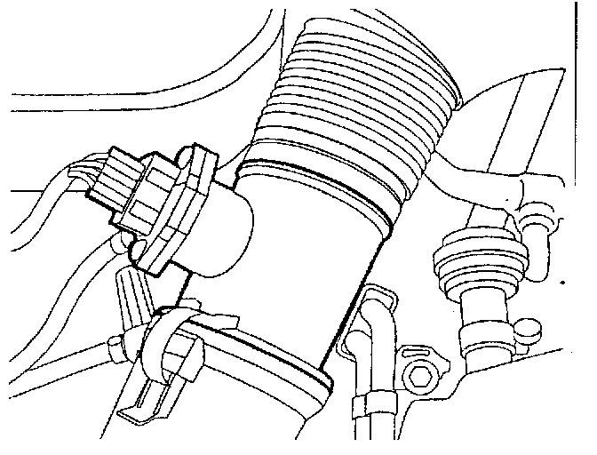

Operation CHARM
: Car repair manuals for everyone.
Home
>>
Volkswagen
>>
1997
>>
GTI (1H1) V6-2.8L (AAA)
>>
Repair and Diagnosis
>>
Powertrain Management
>>
Sensors and Switches - Powertrain Management
>>
Sensors and Switches - Fuel Delivery and Air Induction
>>
Air Flow Meter/Sensor
>>
Locations
Air Flow Meter/Sensor: Locations
G62, G70, G66:

Component Location View
G70:

Component View
G70 Mass Air Flow (MAF) Sensor
-
In Intake air duct between air cleaner housing and throttle body